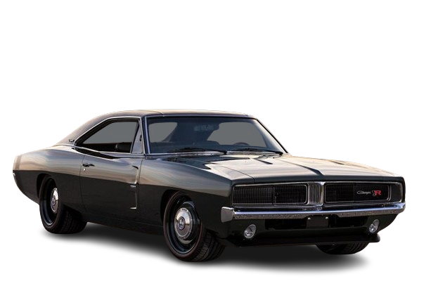
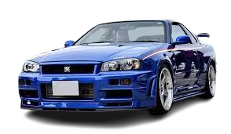
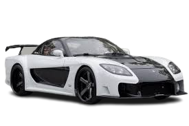
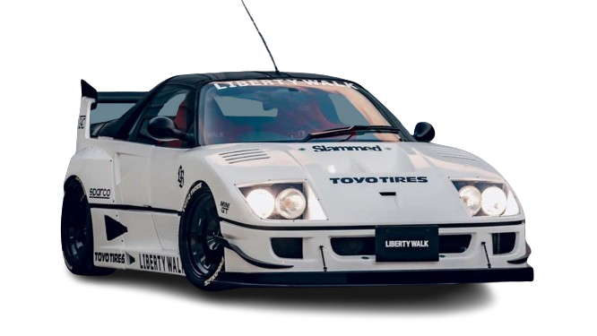
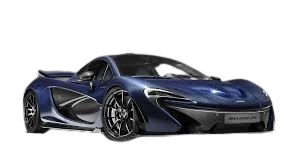
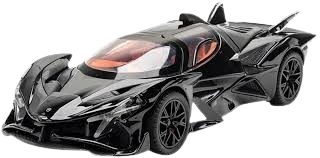

My Collection
My Private Cars Collection
Ini beberapa mobil pribadi saya yang saya simpan di bengkel mobil pribadi, ada berbagai koleksi mobil dengan perusahaan yang berbeda dan jenis yang berbeda.

Horsepower 431 hp (425 bhp)
Rev. at Max Power 5,000 rpm
Torque 664 Nm
Torque 490 lb-ft
Rev. at Max Torque 4,000 rpm
Dodge Charger 1969
Engine Specification
Power 317 kWHorsepower 431 hp (425 bhp)
Rev. at Max Power 5,000 rpm
Torque 664 Nm
Torque 490 lb-ft
Rev. at Max Torque 4,000 rpm

Power 276bhp @ 7000rpm
Torque 289lb ft @ 4400rpm
Transmission Six-speed manual, four-wheel drive, active rear rear LSD
Front suspension Multi-link, coil springs, passive dampers, anti-roll bar
Rear suspension Multi-link, coil springs, passive dampers, anti-roll bar
Brakes Ventilated discs front and rear
Wheels 9 x 18in front and rear
Tyres 245/45 ZR18 front and rear
Weight 1560kg
Power-to-weight 180bhp/ton
0-60mph 4.8sec (claimed)
Top speed 165mph (claimed)
Price when new £50,000 (1999)
Nissan GTR-R34
Engine Specification
Engine In-line 6-cyl, twin-turboPower 276bhp @ 7000rpm
Torque 289lb ft @ 4400rpm
Transmission Six-speed manual, four-wheel drive, active rear rear LSD
Front suspension Multi-link, coil springs, passive dampers, anti-roll bar
Rear suspension Multi-link, coil springs, passive dampers, anti-roll bar
Brakes Ventilated discs front and rear
Wheels 9 x 18in front and rear
Tyres 245/45 ZR18 front and rear
Weight 1560kg
Power-to-weight 180bhp/ton
0-60mph 4.8sec (claimed)
Top speed 165mph (claimed)
Price when new £50,000 (1999)

Max power 237bhp @ 6500rpm
Max torque 218lb ft @ 5000rpm
Weight 1284kg
Power-to-weight 184bhp/ton
0-60mph 5.4sec (claimed)
Top speed 156mph (limited)
Mazda RX-7
Engine Specification
Engine Twin-chamber rotary, twin-turboMax power 237bhp @ 6500rpm
Max torque 218lb ft @ 5000rpm
Weight 1284kg
Power-to-weight 184bhp/ton
0-60mph 5.4sec (claimed)
Top speed 156mph (limited)

Horsepower 478 hp (471 bhp)
Rev. at Max Power 7,000 rpm
Torque 577 Nm
Torque 425 lb-ft
Rev. at Max Torque 4,000 rpm
Cylinders 8 Cyl. / 4 V per Cyl
Bore 82 mm
Stroke 69.5 mm Compression Ratio 7.7 :1
Engine Configuration V-Engine
Turbocharger Yes
Ferrari F40
Engine Specification
Power 352 kWHorsepower 478 hp (471 bhp)
Rev. at Max Power 7,000 rpm
Torque 577 Nm
Torque 425 lb-ft
Rev. at Max Torque 4,000 rpm
Engine Configuration
Displacement 2,936 cc / 2.9 lCylinders 8 Cyl. / 4 V per Cyl
Bore 82 mm
Stroke 69.5 mm Compression Ratio 7.7 :1
Engine Configuration V-Engine
Turbocharger Yes

Horsepower 999 hp (986 bhp)
Cylinders 8 Cyl. / 4 V per Cyl.
Bore 93 mm
Stroke 69.9 mm
Compression Ratio 8.7 :1
Engine Configuration V-Engine
Turbocharger Twin-turbo
ICE Specifications
Horsepower (Metric) 1,000 hp
McLaren P1
Engine Specification
Power 735 kWHorsepower 999 hp (986 bhp)
Configuration Combustion
Displacement 3,799 cc / 3.8 lCylinders 8 Cyl. / 4 V per Cyl.
Bore 93 mm
Stroke 69.9 mm
Compression Ratio 8.7 :1
Engine Configuration V-Engine
Turbocharger Twin-turbo
ICE Specifications
Horsepower (Metric) 1,000 hp

Displacement 6.3 l (384 ci)
Power 780 ps (769 bhp / 574 kw)
Torque 760 Nm (561 lb-ft)
Power / liter 124 ps (122 hp)
Power / weight 650 ps (641 bhp) / t
Torque / weight 633 Nm (467 lb-ft) / t
Transmission 8 speed PDK
Layout middle engine, rear wheel drive
Apollo Project EVO
Engine Specification
Engine type V12Displacement 6.3 l (384 ci)
Power 780 ps (769 bhp / 574 kw)
Torque 760 Nm (561 lb-ft)
Power / liter 124 ps (122 hp)
Power / weight 650 ps (641 bhp) / t
Torque / weight 633 Nm (467 lb-ft) / t
Transmission 8 speed PDK
Layout middle engine, rear wheel drive